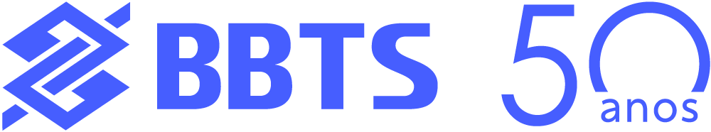
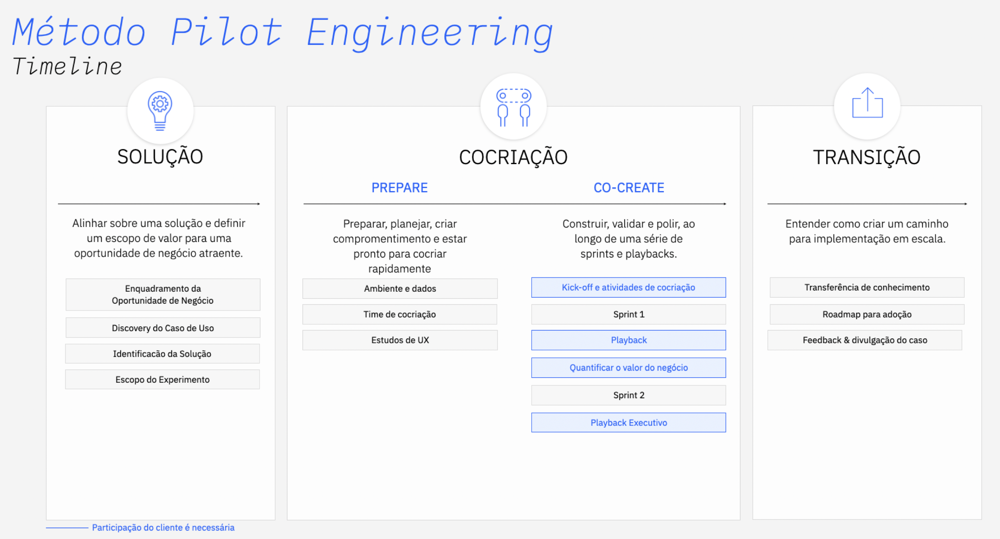

Garagem BBTS e IBM: Modernização de Aplicação
Alinhamento de agenda e próximos passos | Workshop Discovery

Alinhamento de agenda e próximos passos | Workshop Discovery
A BBTS presta serviço de modernização de aplicações para o Banco do Brasil. Esse processo é manual e exige muito tempo do desenvolvedor para a migração e para as conferências necessárias.
É possível utilizar o IBM Bob como ferramenta de apoio ao desenvolvedor para otimizar o processo de modernização de aplicações.
Uma das necessidades atuais é a migração de subrotinas do Natural para o Cobol. Para detalhar esse caso de uso, é necessário realizar um processo de Discovery.

| O que precisamos | Descrição |
|---|---|
| Data e hora (4 horas) | Proposta de datas: 21/05 - quinta-feira, das 9:30h às 12:30h |
| Formato e Local | Online - Teams |
| Lista de Participantes | (a) Quem vai criar/manter a solução (b) Quem vai usar a solução final (c) Quem conhece sistemas que precisam interagir com a solução futura ou que vão ser substituídos por ela |
| O que precisamos | Descrição |
|---|---|
| Data (1 hora) | Proposta de datas: 29/05 - sexta-feira, das 10h às 12h |
| Formato e Local | Online - Teams |
| Lista de Participantes | (a) Quem vai criar/manter a solução (b) Quem vai usar a solução final (c) Quem conhece sistemas que precisam interagir com a solução futura ou que vão ser substituídos por ela (d) Sponsor que aprova o escopo e o seguimento da experimentação |
| O que precisamos | Definir dias e horários para as sessões técnicas de experimentação |
|---|---|
| Formato e Local | Online - Teams |
| Lista de Participantes | Alex Bonifácio |